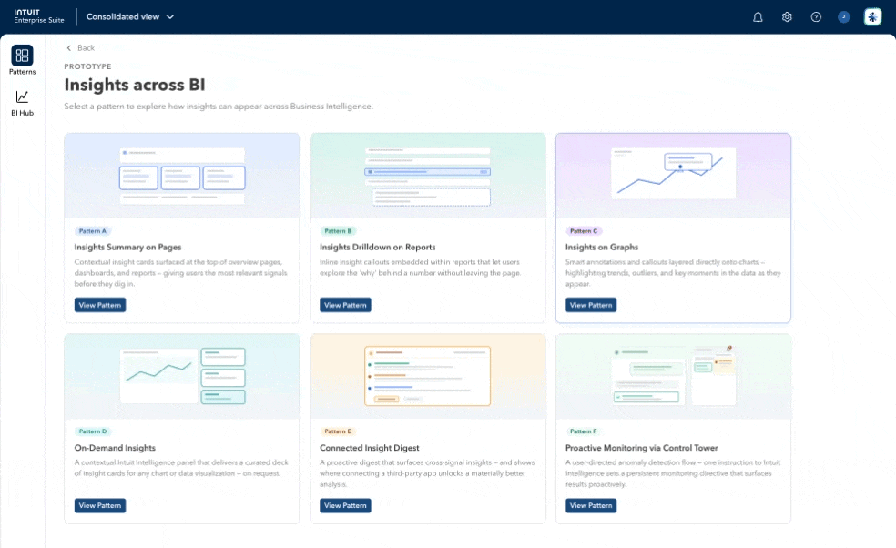
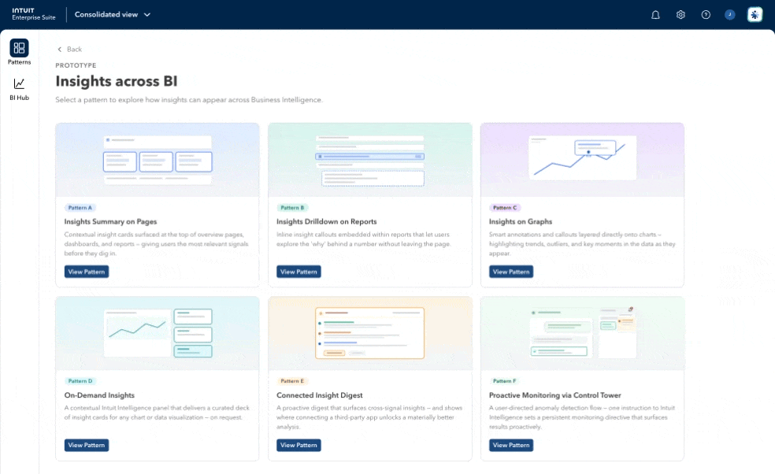
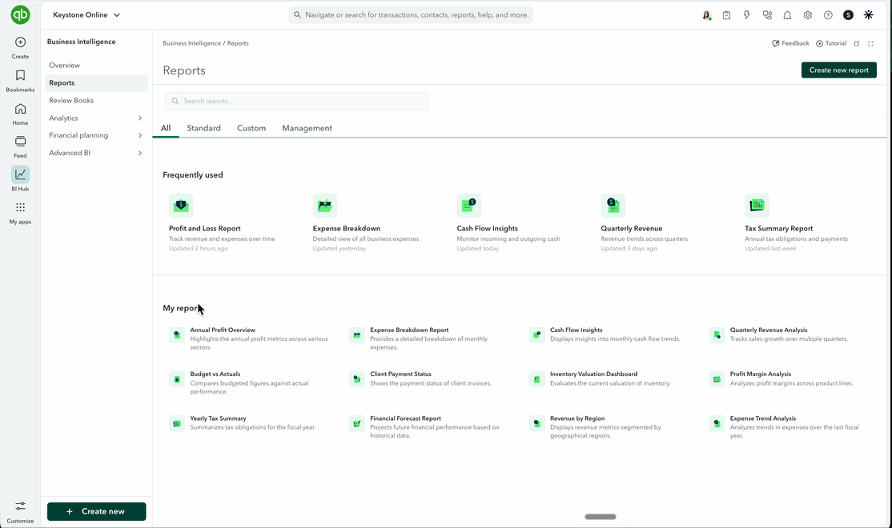
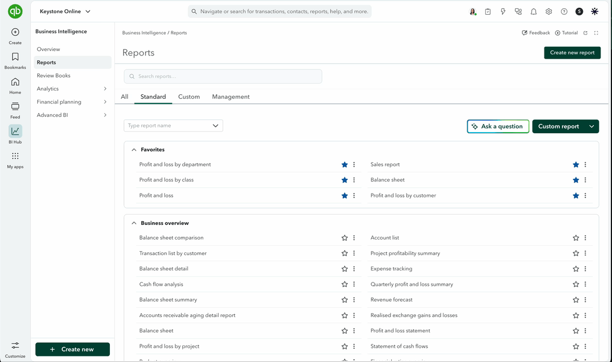
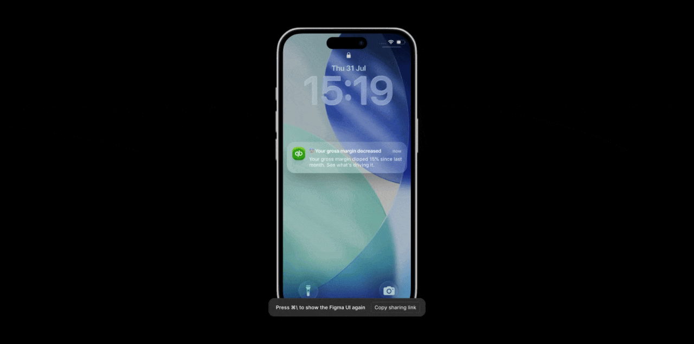

AI-Powered Insights
Customers sit on financial signals across profit and loss, revenue, cost of goods sold, taxes, and expenses — far more than anyone can monitor by hand. AI-Powered Insights is an anomaly-detection agent that watches all of it and surfaces only what's actually worth a customer's attention, directly inside QuickBooks Online reports.
The project goal was to work out an insights strategy first, then partner with independent execution teams to ship it. AI-powered insights live inside QuickBooks Online reports — profit and loss, cash reports, balance sheet — and the moment we detect an anomaly, we surface it right there. A customer can click into it, understand what happened, and see what to do about it.
The underlying problem is scale: any given business is sitting on financial signals across profit and loss, revenue, cost of goods sold, taxes, and expenses. Monitoring all of that by hand is cumbersome to the point of impossible, so the bet was an AI agent that does the monitoring and only surfaces what's actually worth a customer's attention.
Success wasn't just usage — we defined it against customer effort score (CES) on reports, plus harder signals like how many edits books needed after close, how often books had to be reopened, and how much time went into preparing and revising them.
The work started as broad strategy — mapping every touchpoint and entry point where an AI-powered insight could plausibly show up across the product, then narrowing from there.
Rather than spec everything up front, I built a prototype and used it to rapidly generate a wide array of explorations, each one representing a different touchpoint or entry point for an insight. That prototype — and the AI-assisted workflow behind it — became the fastest way to get real options in front of people instead of talking about them abstractly.
Those explorations went through rapid design crits, design-leadership shareouts, and working sessions with engineering and PM, alongside in-depth customer research with a dedicated researcher. Two directions consistently aligned with both user need and what engineering was already thinking about.



The first shipped idea put insights directly on reports — specifically profit and loss and balance sheet. Profit-and-loss-related reports account for roughly half of all customer report views, so it was the highest-leverage place to start.
The first version surfaced insights in a popover. We soft-launched it to 10% of customers, and voice-of-customer feedback was blunt: the popover clipped and covered the report underneath, and people didn't want that — even though it sat close to the line item it was explaining. We shipped a fast follow that moved insights into a side panel instead, and followed that with a resolve state so a customer could act on an insight without leaving the flow.

The version that shipped.

An alternative we explored in parallel but decided against — it added noticeable latency and likely wouldn't have been available on lower SKUs, so it never made it to launch.

From anomaly to action — anatomy of the insights feed and drill-down panel: how each evolved from v1 to v2, the four ways a customer can hand a finding to the agent, and the detect → explain → act loop that ties it together.
A separate, leadership-driven push was mobile engagement. Our small-and-medium-business customers skew heavily mobile in general, but historically under-use QuickBooks there. The broader bet was an "Intuit Intelligence" experience — a conversational surface living inside QuickBooks that a customer could ask anything financial.
I joined a cross-functional design sprint with senior designers from across the product to explore what an insight looks like on mobile: tap an insight, land inside Intelligence, and go back and forth until the anomaly and the fix are both clear — "your revenue is dropping," "your vendor service fee is too high," and concrete steps to resolve it.
A meaningful part of this sprint's speed came from an AI-native workflow — using Claude to draft and iterate the conversational narratives quickly, then tuning them until they matched Intuit's voice and tone, rather than hand-writing every conversational branch from scratch.

Insights on mobile — a lock-screen notification opens directly into Intuit Intelligence to explain what changed.
"AI-Powered Insights went from a concept to one of QuickBooks' most-used AI-driven features in under 12 months."
AI-Powered Insights went from 100 users in April 2025 to a core engagement surface reaching over a million users a month — 900K to 1.1M unique users exposed every month, with roughly 500K companies a week interacting with an insight in-report. January 2026 was the peak so far: 1.13M users reached and 125K insight clicks, the strongest engagement since launch.
Of the customers eligible to see one, 9 in 10 now get an AI insight surfaced to them, and 1 in 6 open it. About 39% of people who open an insight come back and open another — a sign this reads as a habit rather than a novelty click — and 34% of users are still engaging a month later, with more than a quarter still active after three months.
The insights themselves are catching real, material findings customers act on — a 245% jump in GST/HST payable worth $52K, and a 408% expense spike worth $27.8K, among others.
Two directions are active now. The first is giving customers control over which insights they actually want. A typical profit-and-loss report can run to hundreds of line items — internet, licensing, permits, insurance, and cost of goods sold alone can be a hundred more — and research made clear that every business only really cares about a handful of them. A construction business wants anomalies on building materials; someone else only wants their travel expenses watched. The design for letting customers configure what they're monitored on is finished and ready to build.
The second is a dedicated insights review page for accountants, where AI doesn't just flag a line item but helps resolve it — reconciliation, removing duplicate entries, adding missing expenses or receipts — so accountants can close books faster, which is one of their biggest recurring pain points.
Longer term, the direction is next-best-action: research keeps surfacing that customers want this done for them, not just flagged for them — which is exactly the thinking behind the accountant book-review work above.